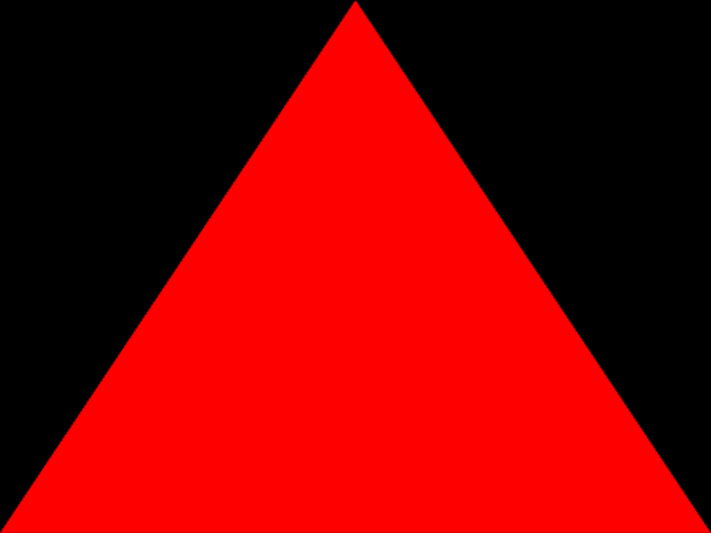
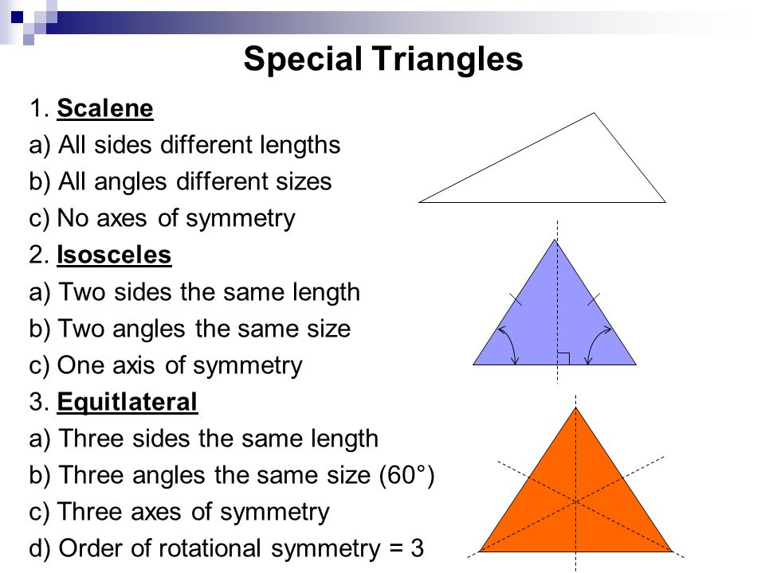

This is basically a detective system that finds out based on input which type of triangle the values give.

For Euclid a triangle was a finite two-dimensional figure contained by three straight line segments. That's also the common meaning of the word for we speak of the area of a triangle, and it is two-dimensional figures that have areas. The boundary of the triangle consists of the three straight line segments Although Pascal's Triangle is named after seventeenth century mathematician, Blaise Pascal, several other mathematicians knew about and applied their knowledge of the triangle hundreds of years before the birth of Pascal in 1623.
